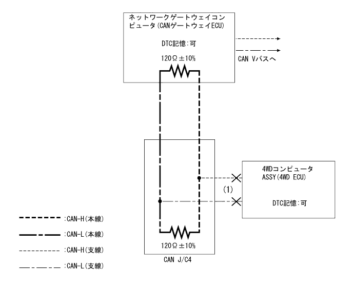
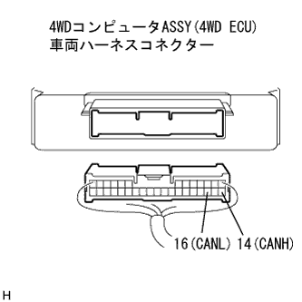
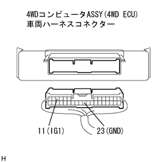

DTC U0114 4WD ECU Communication Malfunction |
| DTC No. | DTC Detection Condition | DTC Output Related Items |
|---|---|---|
| U0114 | With the IG ON, the CAN gateway ECU cannot receive data from the 4WD ECU |
|

| Step 1 | Check DTC |
Using SST (TaSCAN), check the DTCs.
| Result | Proceed to |
|---|---|
| U1002 is not output | A |
| U1002 is output | B |
|
| ||||
| A | |
| Step 2 | CAN Bus Open Circuit Inspection (4WD ECU Branch Line) |
 |
Turn the IG OFF and disconnect the vehicle wire harness connector of the 4WD computer assembly (4WD ECU).
Using SST (Toyota electrical tester), measure the resistance between the terminals of the vehicle wire harness connector of the 4WD computer assembly (4WD ECU).
| Tester Connection (Terminal Symbol) | Condition | Standard |
|---|---|---|
| 14(CANH) - 16(CANL) | IG OFF | 54 to 69Ω |
|
| ||||
| OK | |
| Step 3 | Inspect Wire Harness (ECU Power Source System) |
 |
Using SST (Toyota electrical tester), measure the voltage and resistance between each terminal of the 4WD computer assembly (4WD ECU) vehicle wire harness connector and body ground.
| Tester Connection (Terminal Symbol) | Condition | Standard |
|---|---|---|
| 11 (IG1) - Body ground | IG ON | 11 to 14V |
| Tester Connection (Terminal Symbol) | Condition | Standard |
|---|---|---|
| 23 (GND) - Body ground | IG OFF | Below 1 Ω |
|
| ||||
| OK | ||
| ||